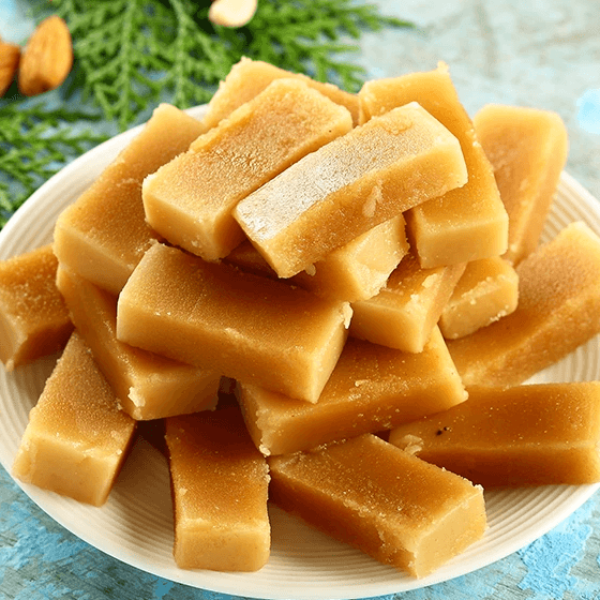
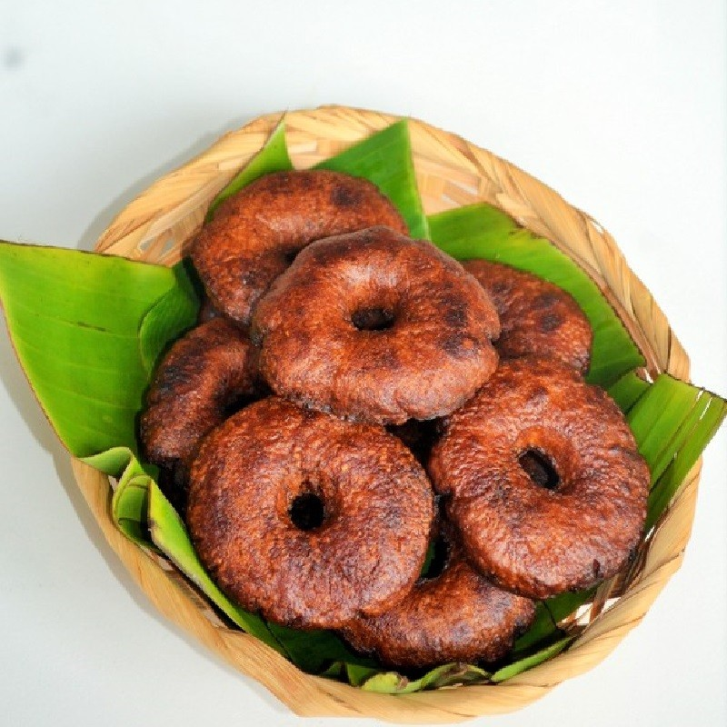
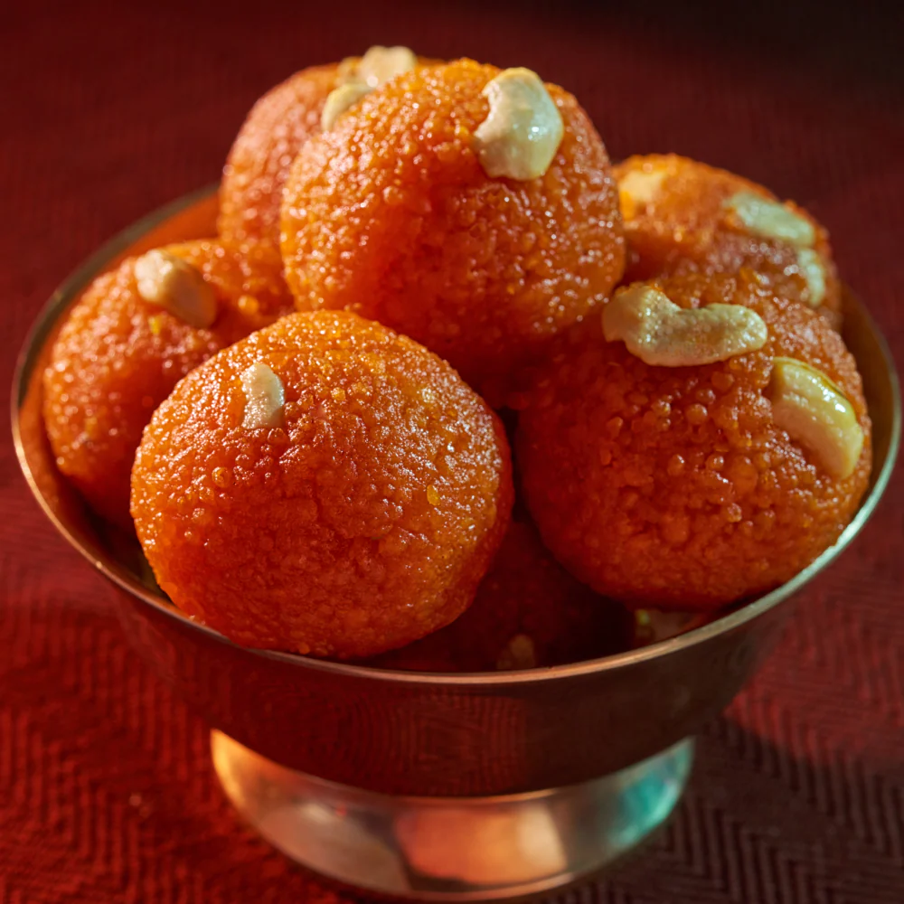

Mysore Pak
Soft and melt-in-the-mouth when made with more ghee.

Adhirasam
Outside is slightly crisp, inside is soft and chewy.

Laddu
Dry fruits & nuts (cashew, almond, raisins).

Jalebi
A common sweet during Diwali,Eid,and weddings.